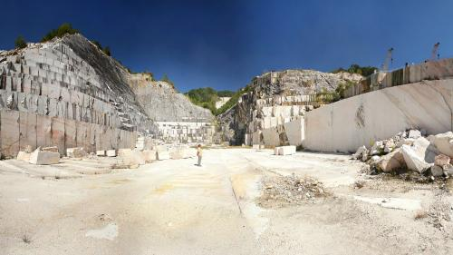
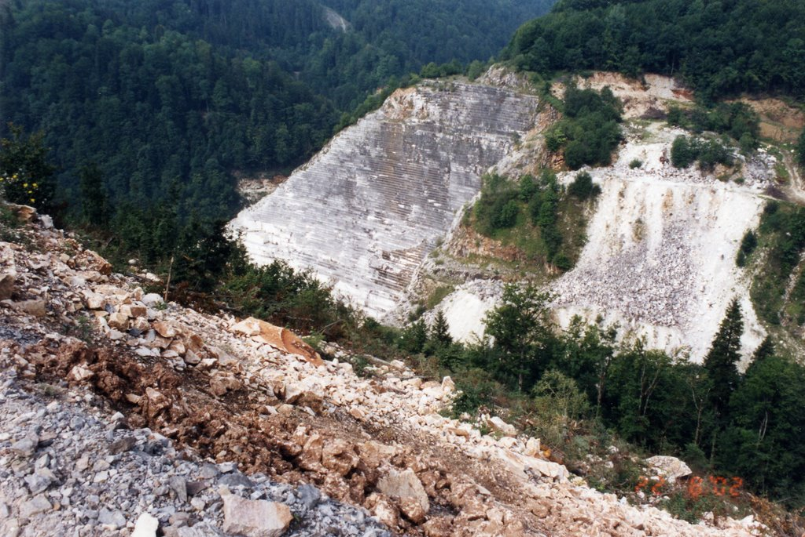
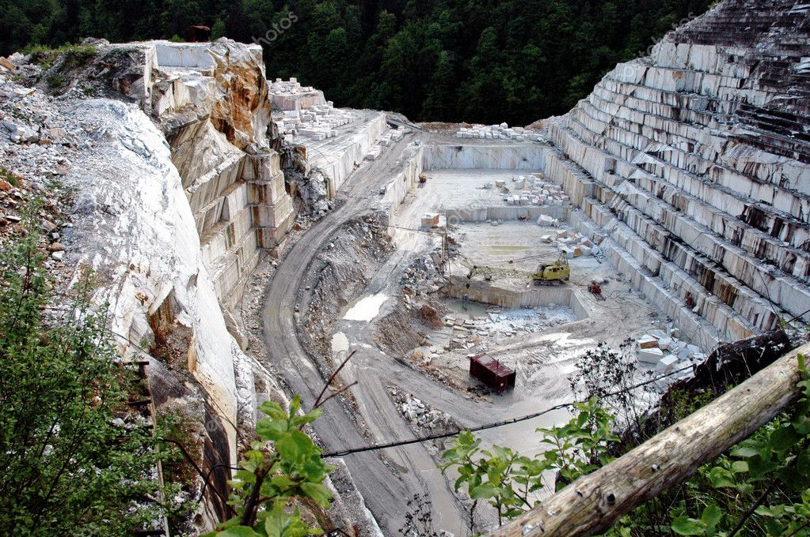
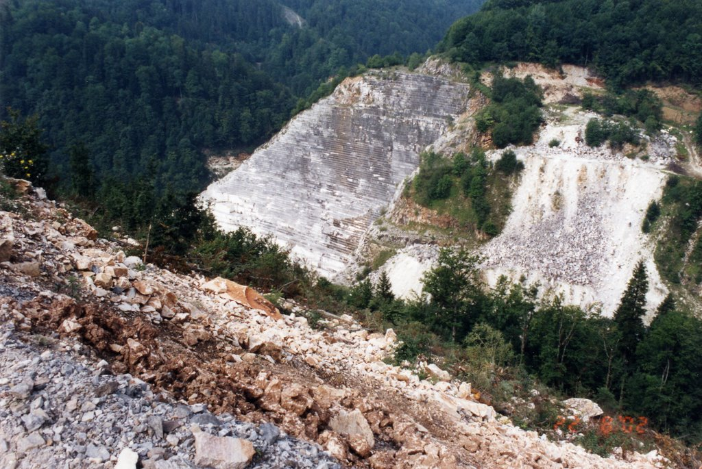

The Romanian wonder marble

The marble quarry from Rușchița, Caraș-Severin County,
is located at a distance of 10 km from Rusca Montană commune.
The marble extracted from Rușchița has different shades - from white,
to gray, pink, reddish and yellow-pink
Today, the marble is exhibited in two quarries:
Cariera Veche - Gropan and Cariera Nouă - Dealul lui Ionel,
both located in the Poiana Ruscă Mountains,
at an altitude of 800 meters.
hese two quarries have the largest marble deposit that is exploited in Romania


Many important monuments were made of Rușchița marble,
such as many buildings in the Austro-Hungarian Empire, such as the Palace of the Banks in Vienna.
Also, the Cathedral of Milan was restored with Rușchița marble.
In the United States, the famous eagle in the Oval Office of the White House was carved in marble from Rușchița.
The marble quarry from Rușchița, Caraș-Severin County, is located at a distance of 10 km from Rusca Montană commune. The marble extracted from Rușchița has different shades - from white, to gray, pink, reddish and yellow-pink
Today, the marble is exhibited in two quarries: Cariera Veche - Gropan and Cariera Nouă - Dealul lui Ionel, both located in the Poiana Ruscă Mountains, at an altitude of 800 meters. hese two quarries have the largest marble deposit that is exploited in Romania
Many important monuments were made of Rușchița marble, such as many buildings in the Austro-Hungarian Empire, such as the Palace of the Banks in Vienna. Also, the Cathedral of Milan was restored with Rușchița marble. In the United States, the famous eagle in the Oval Office of the White House was carved in marble from Rușchița.